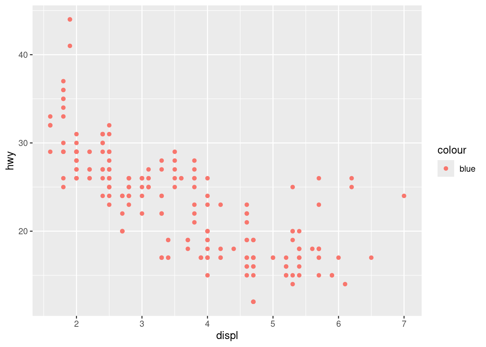
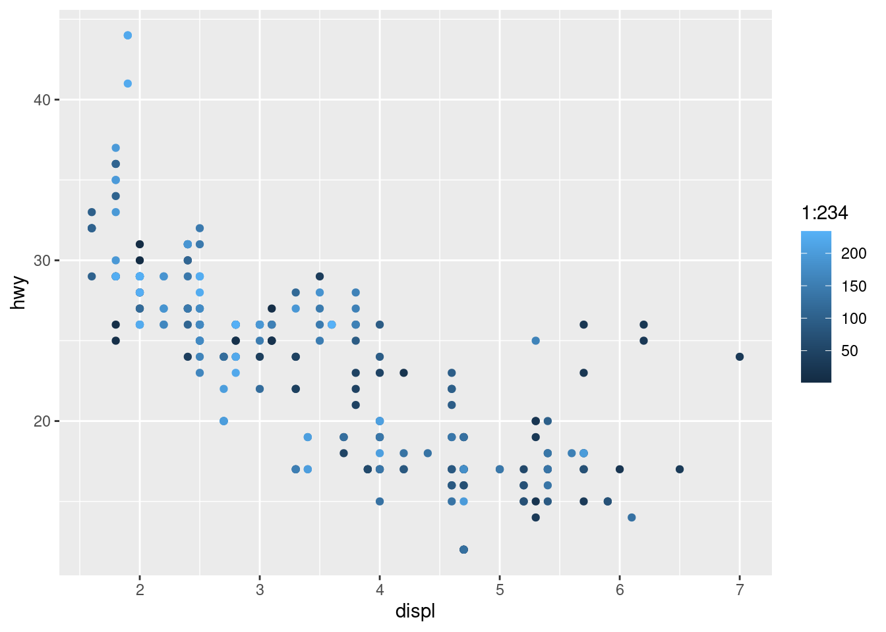
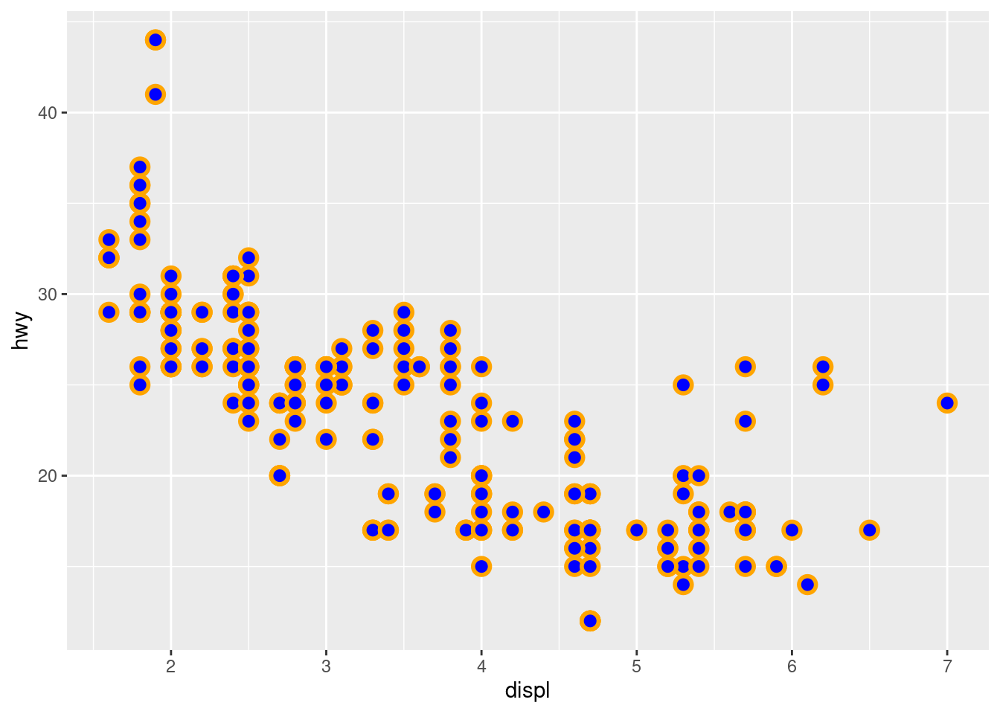
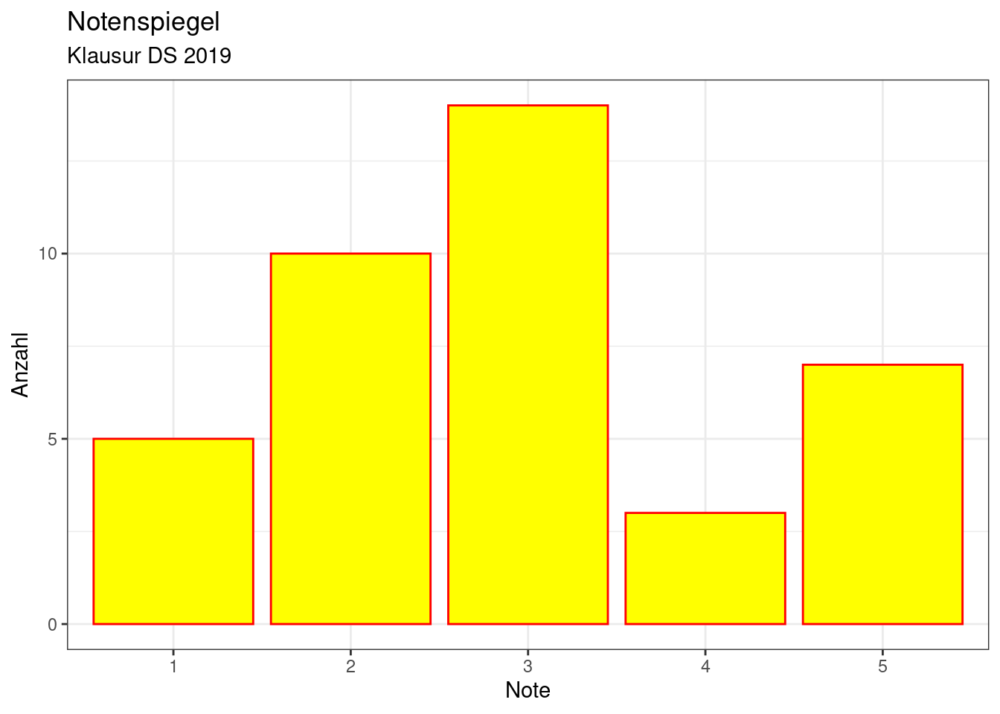
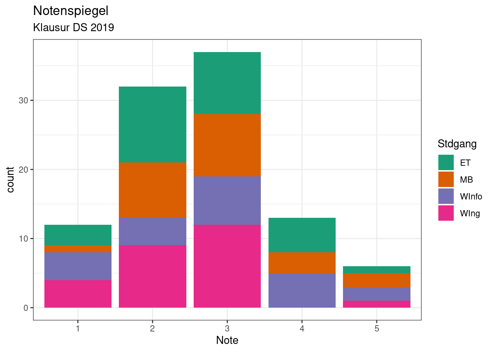
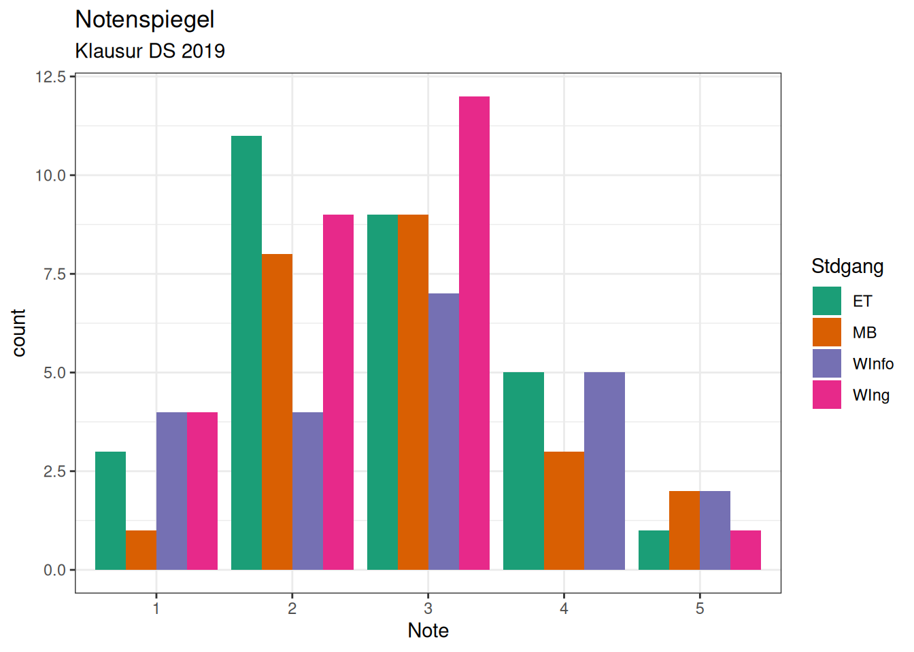
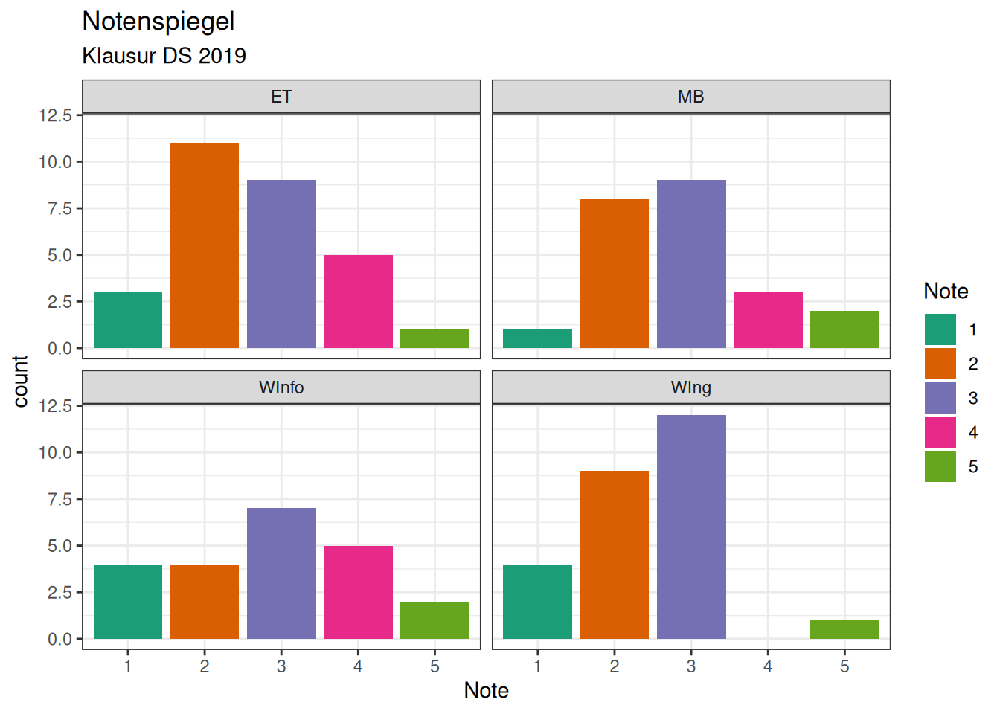
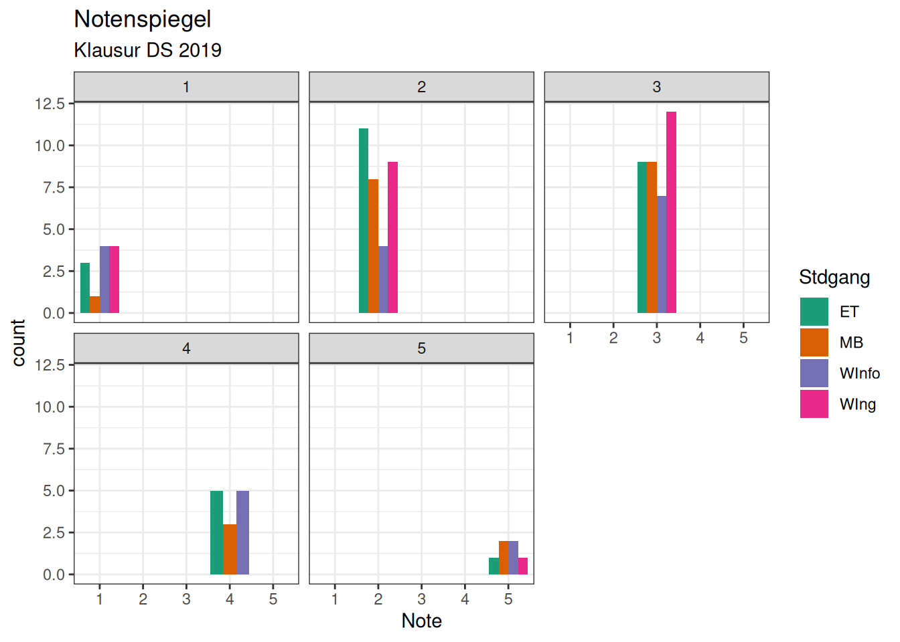
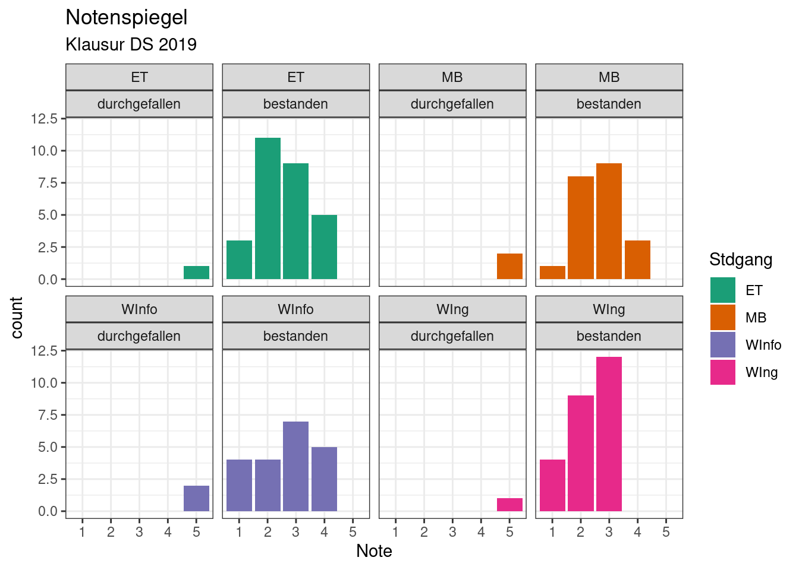
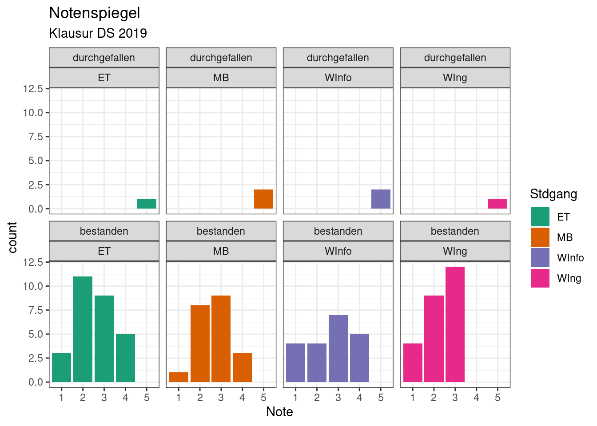

Chapter 6 Datenvisualisierung mit ggplot2
Parallel zu diesem Kapitel sollen Sie das Kapitel “3 Data visualisation” aus “R for Data Sciences” durcharbeiten. “R for Data Sciences” gibt es in mindestens drei Versionen:
https://r4ds.had.co.nz ist die Webseite zum Buch (Wickham and Grolemund 2017).
Wickham, Hadley and Grolemund, Garrett: R for Data Science: Import, Tidy, Transform, Visualize, and Model Data. Sebastopol: O’Reilly Media, Inc., 2016.
Mittlerweile gibt es auch eine deutsche Übersetzung: Wickham, Hadley und Grolemund, Garrett: R für Data Science : Daten importieren, be-reinigen, umformen, modellieren und visualisieren. Sebastopol: O’Reilly, 2017
Es gibt mehrere Möglichkeiten, Grafiken in R zu erstellen. Bis jetzt haben wir die im Base-R enthaltenen Funktionen wie plot(), barplot(), boxplot() und hist() benutzt, um einfache Grafiken zu erstellen. Das ggplot2-Package (Wickham 2016) (siehe auch: https://cran.r-project.org/web/packages/ggplot2/index.html) bietet darüber hinaus viele interessante Möglichkeiten, mit relativ wenig Aufwand aussagekräftige Grafiken zu erstellen. Nicht umsonst ist es mittlerweile weit verbreitet. Allerdings unterstützt ggplot2 keine dreidimensionalen Grafiken. Wie wir sehen werden, ist die ggplot2 zugrunde liegende Idee, die einzelnen Komponenten einer Grafik durch eine spezielle Grammatik zu beschreiben. (Wickham 2010)
6.1 Erste Beispiele
Das Data Frame mpg ist Teil des ggplot2-Packages (siehe ?mpg). Es besteht aus 234 Datensätzen mit jeweils 11 Variablen. Es enthält u. a. Informationen über den Energieverbrauch von unterschiedlichen Automodellen aus den Jahren 1999 und 2008, die von der US Environment Protection Agency gesammelt wurden. (Wickham 2016) (siehe auch: http://fueleconomy.gov)
## tibble [234 × 11] (S3: tbl_df/tbl/data.frame)
## $ manufacturer: chr [1:234] "audi" "audi" "audi" "audi" ...
## $ model : chr [1:234] "a4" "a4" "a4" "a4" ...
## $ displ : num [1:234] 1.8 1.8 2 2 2.8 2.8 3.1 1.8 1.8 2 ...
## $ year : int [1:234] 1999 1999 2008 2008 1999 1999 2008 1999 1999 2008 ...
## $ cyl : int [1:234] 4 4 4 4 6 6 6 4 4 4 ...
## $ trans : chr [1:234] "auto(l5)" "manual(m5)" "manual(m6)" "auto(av)" ...
## $ drv : chr [1:234] "f" "f" "f" "f" ...
## $ cty : int [1:234] 18 21 20 21 16 18 18 18 16 20 ...
## $ hwy : int [1:234] 29 29 31 30 26 26 27 26 25 28 ...
## $ fl : chr [1:234] "p" "p" "p" "p" ...
## $ class : chr [1:234] "compact" "compact" "compact" "compact" ...Dabei haben die Variablen des Datensatzes mpg folgende Bedeutungen:
| Variable | Bedeutung (engl.) | Bedeutung (dt.) |
|---|---|---|
manufacturer |
Manufacturer/brand name | Hersteller |
model |
Car model name | Modell-Name |
displ |
Engine displacement, in litres | Hubraum in Litern |
year |
Year of manufacture | Baujahr |
cyl |
Number of cylinders | Anzahl der Zylinder |
trans |
Type of transmission | Schaltung (Automatik / Anzahl der Gänge) |
drv |
f = front-wheel drive, r = rear wheel drive, 4 = 4wd | Antrieb |
cty |
City miles per gallon | Verbrauch: Stadt |
hwy |
Highway miles per gallon | Verbrauch: Autobahn |
fl |
Fuel type. e = ethanol, d = diesel, r = regular, p = premium, c = natural gas | Antriebsart |
class |
The ‘type’ of car | Fahrzeugtyp |
Umrechnung: miles per gallon (mpg) nach Liter pro 100 km
## Warning in attr(x, "align"): 'xfun::attr()' is deprecated.
## Use 'xfun::attr2()' instead.
## See help("Deprecated")
## Warning in attr(x, "align"): 'xfun::attr()' is deprecated.
## Use 'xfun::attr2()' instead.
## See help("Deprecated")| 10 mpg entsprechen 23,5 l/100 km | 15 mpg entsprechen 15,7 l/100 km |
| 20 mpg entsprechen 11,8 l/100 km | 25 mpg entsprechen 9,4 l/100 km |
| 30 mpg entsprechen 7,8 l/100 km | 35 mpg entsprechen 6,7 l/100 km |
Die Umrechnung von Miles per Gallon (mpg) nach Liter pro 100 km kann z. B. durch eine Funk-tion geschehen:
# Umrechnung von Miles per Gallon (mpg) nach Liter pro 100 km
literPer100km <- function(mpg) {
return(round(235.195 / mpg, digits = 1))
}Wir erhalten dann die obigen Werte:
## [1] 10 15 20 25 30 35 40## [1] 23.5 15.7 11.8 9.4 7.8 6.7 5.9Wie wir sehen, hat der Datensatz mpg einigermaßen vernünftige „sprechende“ Bezeichnungen für die verschiedenen Variablen (Spaltennamen) (für Europäer manchmal vielleicht zu sehr abgekürzt); ebenso haben die nicht nominal skalierten Daten aussagekräftige Werte. Dies wird uns bei der Erstellung der unterschiedlichen Plots helfen.
Der erste Plot in Kapitel 3 in Wickham and Grolemund (2017) wurde erzeugt durch:
Es geht mithilfe der qplot-Funktion sogar noch kürzer:
## Warning: `qplot()` was deprecated in ggplot2 3.4.0.
## This warning is displayed once every 8 hours.
## Call `lifecycle::last_lifecycle_warnings()` to see where this warning was
## generated.
Figure 6.1: Der erste Plot: Hubraum versus Verbrauch.
Allerdings bezeichnet selbst Hadley Wickham, der ggplot2 entwickelt hat, die Funktion qplot als „Krücke“, die zwar in vielen Situationen vernünftige Defaultwerte benutzt, empfiehlt aber das konzeptionell übersichtlichere ggplot für komplizierte Grafiken zu benutzen.
Wir gehen vom Folgenden aus:
Die zugehörigen Daten liegen immer in Form eines Data Frame vor.
Eine Grafik besteht aus mehreren Ebenen.
Ein “Geom” ist ein geometrisches Objekt, das die Erscheinungsform festlegt. Beispiele:
Balkendiagramm:
geom_bar()(gut geeignet für die Visualisierung der Werte einer diskreten Variable)Histogramm:
geom_histogram()(gut geeignet für die Visualisierung der Werte einer kontinuierlichen Variable)Boxplot:
geom_boxplot()(gut geeignet für die Visualisierung des Zusammenhangs einer diskreten und einer kontinuierlichen Variable)x-y-Plot (scatterplot):
geom_point()(gut geeignet für die Visualisierung des Zusammenhangs zweier kontinuierlicher Variablen)
6.1.1 Beispiel: Ästhetische Eigenschaften (aesthetic) festlegen
Ästhetische Eigenschaften wie colour oder size können direkt mithilfe eines festen Werts festgelegt werden (und zwar außerhalb der Funktion aes()):
# Alle Punkte blau
ggplot(data = mpg) + # outside of aes()
geom_point(mapping = aes(x = displ, y = hwy), color = "blue")Sie können aber auch an eine Variable gebunden werden und nehmen dann abhängig von diesem Variablenwert unterschiedliche Werte an. Dieses „Binden“ geschieht innerhalb der Funktion aes(), dessen Rückgabewert mithilfe des Arguments mapping an das Geom-Objekt übergeben wird:
x und y sind ebenfalls ästhetische Eigenschaften; da sie (in der Regel) an Variablen gebunden werden, stehen sie somit stets innerhalb der Funktion aes().
Im folgenden erzeugten Plot sind die Punkte zwar einfarbig, aber nicht blau! „blue“ wird hier als kategoriale Variable interpretiert, die nur einen Wert annimmt und in der erstellten Legende angezeigt wird:

Figure 6.2: Unerwartete Farbe.
Entsprechend erhält man durch den folgenden Plot eine Vielzahl von Farbtönen und eine entsprechende Legende:

Figure 6.3: Vielzahl von Farben.
6.1.2 Beispiel: Ästhetische Eigenschaften (aesthetic) für geom_point()
geom_point() versteht folgende ästhetische Eigenschaften (x und y müssen immer gesetzt werden):
x, y, alpha, colour, fill, group, shape, size, stroke
Beispielsweise erzeugt folgender Code die Abbildung 6.4:
ggplot(data = mpg) +
geom_point(mapping = aes(x = displ, y = hwy),
size = 3, stroke = 1.5, shape = 21, fill = "blue", color ="orange") 
Figure 6.4: Argumente fill und colour wurden definiert.
6.2 Statistische Transformation
Bevor Daten visualisiert werden, müssen sie in der Regel transformiert und verdichtet werden. Dazu dienen stat-Objekte. Jedes geom-Objekt ist einem Standard-stat-Objekt zugeordnet und umgekehrt. In der folgenden Übersicht werden die häufigsten geom-stat-Beziehungen, die Arnold (2020) entnommen wurden, aufgelistet:
geom |
stat |
|---|---|
geom_bar() |
stat_count() |
geom_bin2d() |
stat_bin_2d() |
geom_boxplot() |
stat_boxplot() |
geom_contour() |
stat_contour() |
geom_count() |
stat_sum() |
geom_density() |
stat_density() |
geom_density_2d() |
stat_density_2d() |
geom_hex() |
stat_hex() |
geom_freqpoly() |
stat_bin() |
geom_histogram() |
stat_bin() |
geom_qq_line() |
stat_qq_line() |
geom_qq() |
stat_qq() |
geom_quantile() |
stat_quantile() |
geom_smooth() |
stat_smooth() |
geom_violin() |
stat_violin() |
geom_sf() |
stat_sf() |
Übungen
Aufgabe 1
Basierend auf folgendem Hinweis, erstellen Sie die folgende Grafik:
Hinweis: anzahl <- c(5, 10, 14, 3, 7)

Figure 6.5: Farbiges Histogram.
Aufgabe 2
Gegeben sind folgende Daten:
Was ist der Unterschied zwischen den beiden Plots:
Was würden Sie bevorzugen und warum?
Aufgabe 3
Gegeben sind ähnlich wie in den Übungen zu Kapitel 5 folgende Daten:
set.seed(1)
anzahl <- 100
MatNr <- sample(1E6:1E7-1, anzahl)
names(MatNr) <- sample(c("ET","MB", "WIng", "WInfo"), anzahl, replace=TRUE)
student <- data.frame(MatNr)
student$Stdgang <- names(MatNr)
student$Punkte <- as.integer(rnorm(anzahl, mean = 68, sd = 12))Es soll wieder das folgende Notenschema zugrunde liegen:
| Note | Punkte |
|---|---|
| 4 | 50–58 |
| 3 | 59–69 |
| 2 | 70–80 |
| 1 | >= 81 |
Erzeugen Sie die folgenden zwei Grafiken unter Beachtung des Hinweises: …… geom_bar(……) + scale_fill_brewer(palette="Dark2") + theme_bw() (siehe auch http://www.cookbook-r.com/Graphs/Colors_(ggplot2)/).

Figure 6.6: Notenspiegel (Variante 1).

Figure 6.7: Notenspiegel (Variante 2).
Aufgabe 4
Erzeugen Sie mit den Daten der letzten Übungsaufgabe die folgenden vier Grafiken:

Figure 6.8: Notenspiegel mit Facetten (Variante 1).

Figure 6.9: Notenspiegel mit Facetten (Variante 2).

Figure 6.10: Noten aufgeteilt in „bestanden“ und „durchgefallen“ (Variante 1).

Figure 6.11: Noten aufgeteilt in „bestanden“ und „durchgefallen“ (Variante 2).